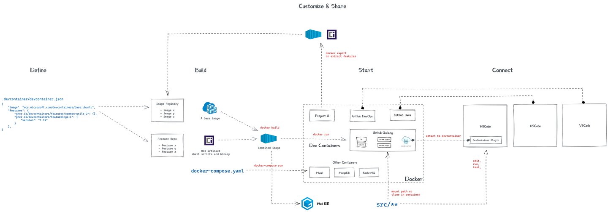

Introduce to our WorkFlow¶
如何使用docker+devcontainer来实现一键配置环境,实现一键启动，纵享丝滑
A glance at our work flow¶
{kind=link}
总结就是定制一个容器，开发在容器中进行，并且写好相应的Dockerfile和devcontainer.json，然后上传到github，配置好CI，在服务器上完成镜像构建，最后小电脑内只需要安装docker,dockercompose,ssh,不用装ros,拉下来镜像就可以上场了。当然对最后上场的镜像要加一些必要的启动脚本，删除一些开发时才需要用的倚赖包，这样可以减小镜像的体积。
（图源网络，侵删）
Step by Step and detail explaination¶
{kind=link}
Development¶
Installation [ Skip if you already prepared ]¶
Install Docker on your computer
Install VsCode Extension
Install Xming/Xlaunch on Windows / Install XQuartz on Mac
Used for GUI visualization
I am currently using XLanch on Windows.
Pull and Run¶
If your colleage have already built the image and prepared the environment:
Clone the repo.
Pull the image.
For Tencent Coding.项目-> 制品管理：制品仓库->拉取
config devcontainer.json
modify at least these item:
"image":"rm_sentry:test2", // to the name of the image you just pulled
and notice that this will mount your local workspace folder into the container, they are binded, i.e. if you change the file in the container, it will change the file in your local workspace folder, and vice versa.
"workspaceFolder": "/home/sentry_ws", // workdir in container "workspaceMount": "source=${localWorkspaceFolder},target=${containerWorkspaceFolder}/src,type=bind", //mount your local file into container, ${containerWorkspaceFolder}=="workspaceFolder"
Open the folder in DevContainer
Click the green button in the bottom left corner of VSCode(remenber to install the extension)
Click “Reopen in Container” and wait for the container to be built.
Start your development! Enjoy it!
Customize your own Docker Image¶
Pull an basic docker image from docker hub.
docker pull ros:humble-perception-jammy
其实后面build docker image的时候，也会自动下载的，先下载下来省时间。
我们这一步做的就是拉取别人构建好的基础镜像，在上面再装一些我们自己需要的软件、上传自己的文件。
Write your own Dockerfile
为什么要写dockerfile呢？ 因为我们需要在基础镜像上安装一些软件，或者上传一些文件，这些操作都可以在dockerfile里面完成。
这里是一个简单的示例
因为也是自己在慢慢摸索，现在还只能写点基础的🫠
# Base on which image
FROM ros:humble-perception-jammy
# source ros environment
RUN echo "source /opt/ros/$ROS_DISTRO/setup.bash" >> ~/.bashrc
# color your terminal
RUN echo "force_color_prompt=yes" >> ~/.bashrc
## Install dependencies
RUN apt-get update && apt-get install -y \
# for using add-apt-repository
software-properties-common \
# for download
wget \
# useful tools
aptitude
RUN apt-get update && apt-get install -y \
# rviz2
ros-$ROS_DISTRO-rviz2 \
# Gazebo
# ros-humble-gazebo-ros \
# rqt
ros-$ROS_DISTRO-rqt \
ros-$ROS_DISTRO-rqt-common-plugins \
# navigation2
ros-$ROS_DISTRO-navigation2 \
ros-$ROS_DISTRO-nav2-bringup \
# Turtlebot3
ros-$ROS_DISTRO-turtlebot3-gazebo \
# octomap dependencies
ros-humble-octomap ros-humble-octomap-msgs ros-humble-octomap-mapping \
ros-humble-octomap-ros ros-humble-octomap-rviz-plugins ros-humble-octomap-server\
# octomap viewer
octovis \
# gridmap dependencies
# 🫠 if you are learning gridmap, you may need to install the following packages
# ros-humble-grid-map-demos
ros-humble-grid-map ros-humble-grid-map-cmake-helpers ros-humble-grid-map-core \
ros-humble-grid-map-costmap-2d ros-humble-grid-map-cv ros-humble-grid-map-filters \
ros-humble-grid-map-loader ros-humble-grid-map-msgs ros-humble-grid-map-octomap \
ros-humble-grid-map-pcl ros-humble-grid-map-ros ros-humble-grid-map-rviz-plugin \
ros-humble-grid-map-sdf ros-humble-grid-map-visualization
# LIO-SAM
# Add GTSAM-PPA
RUN add-apt-repository ppa:borglab/gtsam-release-4.1
RUN apt-get install -y \
ros-humble-perception-pcl \
ros-humble-pcl-msgs \
ros-humble-vision-opencv \
ros-humble-xacro \
libgtsam-dev libgtsam-unstable-dev
# Download models for gazebo
RUN mkdir -p /root/.gazebo/models
WORKDIR /root/.gazebo/models
RUN wget http://file.ncnynl.com/ros/gazebo_models.txt
RUN wget -i gazebo_models.txt
# extract models
RUN ls model.tar.g* | xargs -n1 tar xzvf
# clean up
RUN rm model.tar.gz*
# Install extra dependencies with apt
# Install extra dependencies with pip
# add start script
CMD /bin/bash
😶🌫️学不会是吧，其实我是在镜像里装一个，回到dockerfile里写一条，慢慢就搓出来了。
Build your own Docker Image
# under the path that contains dockerfile
docker build -t <your_image_name>[:<tag>] .
For example, lets name this image rm_sentry, and give it a tag of v1.0, and the dockerfile is in the current directory.
docker build -t rm_sentry:v1.0 .
When the building process is done, you can see it in your docker image list.

Create your own DevContainer and Run your image¶
🌟说明🌟
local\host指的是你的本地电脑，container指的是你在docker里面运行的虚拟机。
Create a folder for your project source code or clone a repo from github
Create a folder called .devcontainer in the repo, and create a file called devcontainer.json in it
now you have a folder structure like this
your_repo
├── .devcontainer
│ └── devcontainer.json
├── README.md
├── package1
├── package2
...
Write your own devcontainer.json
This json file defines how your container will be built and run.
{
"name": "sentry_dev",
"image":"rm_sentry:test2",
"runArgs": [
// "--cap-add=SYS_PTRACE", // enable debugging, e.g. gdb
// "--ipc=host", // shared memory transport with host, e.g. rviz GUIs
"--network=host", // network access to host interfaces, e.g. eth0
// "--pid=host", // DDS discovery with host, without --network=host
"--privileged", // device access to host peripherals, e.g. USB
// "--security-opt=seccomp=unconfined", // enable debugging, e.g. gdb
"--gpus all"
],
"workspaceFolder": "/home/sentry_ws", // workdir in container
"workspaceMount": "source=${localWorkspaceFolder},target=${containerWorkspaceFolder}/src,type=bind", //mount your local file into container, ${containerWorkspaceFolder}=="workspaceFolder"
// "onCreateCommand": ".devcontainer/on-create-command.sh",
// "updateContentCommand": ".devcontainer/update-content-command.sh",
// "postCreateCommand": ".devcontainer/post-create-command.sh",
"remoteEnv": {
"DISPLAY": "host.docker.internal:0.0", // forward X11 display to host, e.g. rviz GUIs
// NOTICE that this is for windows, for mac, you should use "host.docker.internal:0"
// NOTICE that XLaunch should be running on local machine
"NVIDIA_DRIVER_CAPABILITIES":"all" // enable GPU acceleration
// "OVERLAY_MIXINS": "release ccache lld",
// "CCACHE_DIR": "/tmp/.ccache"
},
// "mounts": [
// {
// "source": "ccache-${devcontainerId}",
// "target": "/tmp/.ccache",
// "type": "volume"
// },
// {
// "source": "overlay-${devcontainerId}",
// "target": "/opt/overlay_ws",
// "type": "volume"
// }
// ],
// "features": {
// "ghcr.io/devcontainers/features/desktop-lite:1": {},
// "ghcr.io/devcontainers/features/github-cli:1": {},
// "ghcr.io/rocker-org/devcontainer-features/apt-packages:1": {
// "upgradePackages": true,
// "packages": ""
// }
// },
"customizations": {
// "codespaces": {
// "openFiles": [
// "doc/development/codespaces.md"
// ]
// },
"vscode": { // install extension in container
"settings": {},
"extensions": [
// gadget
"aaron-bond.better-comments",
"PKief.material-icon-theme",
// C++
"ms-vscode.cpptools",
"ms-vscode.cpptools-extension-pack",
"ms-vscode.cpptools-themes",
// python
"ms-python.vscode-pylance",
"ms-python.python",
// CMake
"twxs.cmake",
"ms-vscode.cmake-tools",
// Github Copilot
"GitHub.copilot",
"GitHub.copilot-chat",
"GitHub.copilot-labs",
// note
"VisualStudioExptTeam.vscodeintellicode",
"VisualStudioExptTeam.intellicode-api-usage-examples",
// XML
"DotJoshJohnson.xml",
// PCD viewer
"tatsy.vscode-3d-preview",
// nav2 default
// "althack.ament-task-provider",
// "eamodio.gitlens",
// "esbenp.prettier-vscode",
// "ms-iot.vscode-ros",
// "streetsidesoftware.code-spell-checker"
]
}
}
}
Open the folder in DevContainer
Click the green button in the bottom left corner of VSCode(remenber to install the extension)
Click “Reopen in Container” and wait for the container to be built.
Start your development! Enjoy it still!
🌟原理部分🌟 这里说明一下mount的功能，也就是挂载。上面的这条命令，就是把你本地的文件夹挂载到了container里面，这样你在container里面的操作，就会直接影响到你本地的文件夹，也就是说，你在container里面写的代码，就会直接保存到你本地的文件夹里面，这样就不用每次都把代码从container里面拷贝出来了。 在本地改动也同样会影响到container里面的文件。建议是统一在一个地方做修改，免得冲突。
Official Guides¶
push your workspace to github¶
Then your co-workers can pull your repo and use the same environment as yours!
CI¶
Deployment¶
Finally we can deploy our code to the robot!
install ubuntu in NUC
install docker, docker-compose, ssh
sudo apt-get install docker.io
sudo apt-get install docker-compose
sudo apt-get install openssh-server
Use Docker Without sudo
otherwise vscode docker extension will not work
# Step 1: Create/Make a Docker Group
sudo groupadd docker
# groupadd: group 'docker' already exists
# Step 2: Add your user to the docker group.
sudo usermod -aG docker $USER
# The “usermod” command modifies an account of user on the system.
# The “-aG docker” option adds the new user to the Docker group. The “-a” flag determines that the user should be added to the group, the “-G” flag specifies the group to which user should be added.
# The “docker” is the group name.
# “$USER” is a variable for the current user’s username.
# Step 3: Log out and log back in so that your group membership is re-evaluated.
newgrp docker
# Step 4: Verify that you can run docker commands without sudo.
docker run hello-world
connect to NUC with ssh
I prefer the wireless way.
turn on your personal hotspot on your computer.
connect to the hotspot with NUC
in nuc, connect to the hotspot via cmd line
nmcli device wifi connect <your_hotspot_name> password <your_hotspot_password>
or use GUI if you are a green hand or you really do not care about the cost of GUI.
find the ip address of NUC
in nuc, run
ifconfig
connect your computer to NUC with ssh
in your computer, Open VsCode and click remote Explorer, then click the plus button
then just follow the instructions.
ssh <username>@<ip_address>for example
ssh sentry@192.168.137.235then you can see the NUC in your remote explorer. Connect to it.
pull your docker image from docker hub
follow the instruction in coding “制品仓库”
docker pull <your_image_name>
install docker extension in the remote vscode
finnally you can see your image in the image list
run the image
export DISPLAY=<your hotspot ip>:0.0 sudo xhost + && sudo docker run -it --network=host --privileged -v /dev:/dev DISPLAY=${DISPLAY} sentry:v0.0
–network=host: use host network, livox lidar trasfer data via UDP, and I am tired of forwarding ports. Do not care about security!
–privileged: use host devices, such as USB, GPU(Though we do not have one 🙃), etc.
-e: set environment variables, DISPLAY is used for GUI visualization # TODO:
-v: mount host devices, so that it support hot plug
connect to docker run in NUC
open docker extension in remote vscode, you can see the container list, attach a vscode window to the container.
DONE!
[OPTIONAL] test GUI forwarding
in your computer, open XLaunch, and follow the instruction.
in NUC, run
echo "export DISPLAY=<your_computer_ip>:0.0" >> ~/.bashrc
then restart the container(in NUC)
docker restart <container_name> # or use vscode docker extension to do this
in docker container, run
rviz2
if you can see the rviz2 window in your computer, then it works!`
if not working, in docker container, try to run
code /etc/ssh/sshd_configadd the following lines to the end of the file
Port 22 PermitRootLogin yes ChallengeResponseAuthentication no UsePAM yes X11Forwarding yes X11UseLocalhost no
then restart ssh service
sudo service ssh restart # or /etc/init.d/ssh restart
then try rviz again.
Hope that the next time when you are writing a dockerfile, add lines above to the end of the file so that people who use your docker image do not need to do this again.